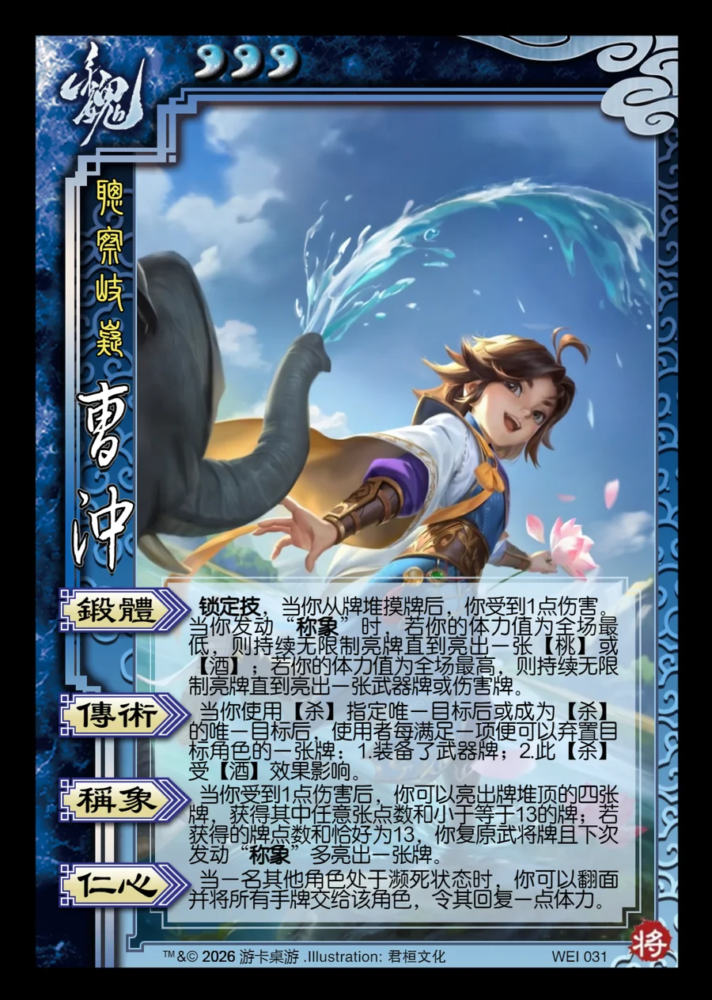

点击卡面查看大图
魏
曹冲
♥3聪察岐嶷
锻体锁定技
锁定技，当你从牌堆摸牌后，你受到1点伤害。当你发动“称象”时，若你的体力值为全场最低，则持续无限制亮牌直到亮出一张【桃】或【酒】；若你的体力值为全场最高，则持续无限制亮牌直到亮出一张武器牌或伤害牌。
传术
当你使用【杀】指定唯一目标后或成为【杀】的唯一目标后，使用者每满足一项便可以弃置目标角色的一张牌：1.装备了武器牌；2.此【杀】受【酒】效果影响。
称象
当你受到1点伤害后，你可以亮出牌堆顶的四张牌，获得其中任意张点数和小于等于13的牌；若获得的牌点数和恰好为13，你复原武将牌且下次发动“称象”多亮出一张牌。
仁心
当一名其他角色处于濒死状态时，你可以翻面并将所有手牌交给该角色，令其回复一点体力。